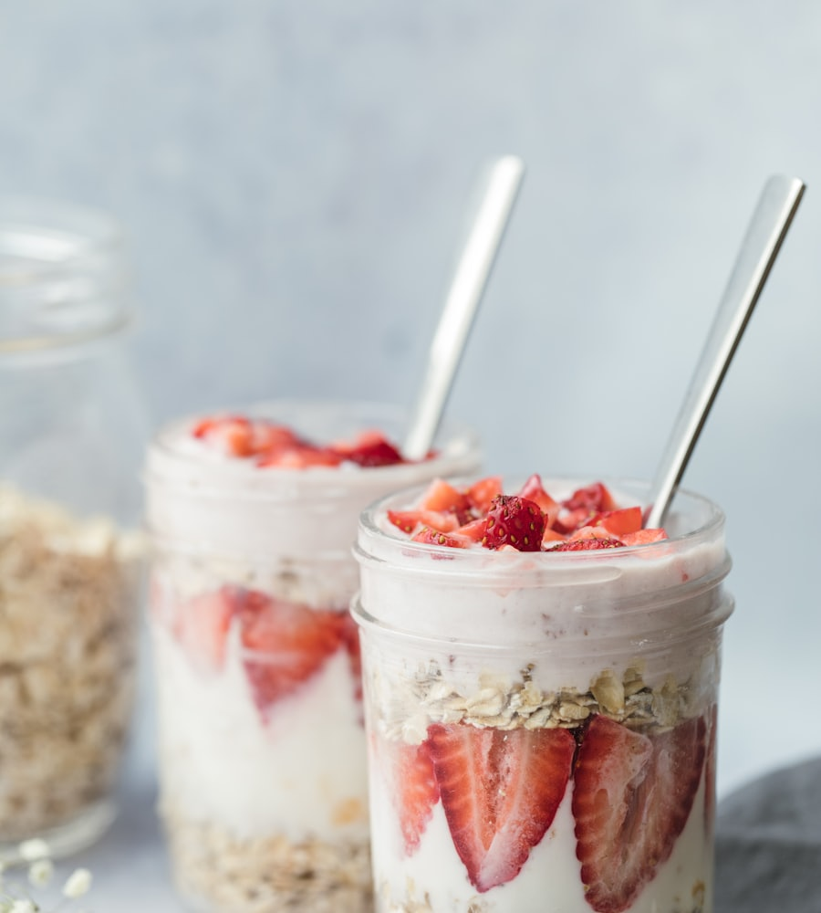

3 минуты вечером
Ночная овсянка с клубникой
- 15 г белка
- бета-глюканы
- без сахара
Что даёт: овсяные бета-глюканы помогают держать холестерин в норме, а йогурт добавляет белок — сытость до обеда без перекусов.
Состав: 4 ст. л. овсянки, 150 г йогурта, 60 мл молока, горсть клубники, 1 ч. л. семян чиа.
Как: вечером сложить всё слоями в банку, закрыть, убрать в холодильник. Утром достать и добавить ягоды.